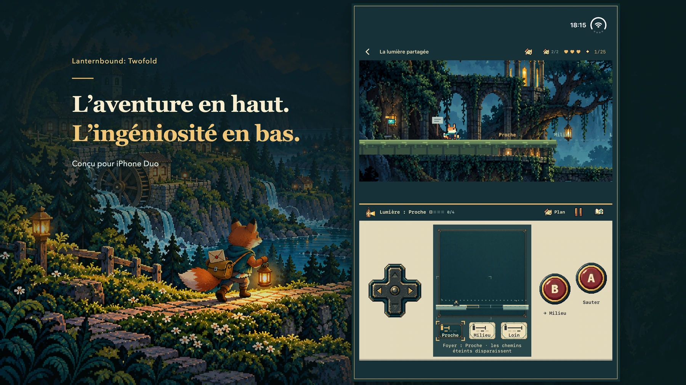

Une aventure pour iPhone Duo
Deux écrans. Douze chemins vers chez soi.
Portez douze lettres à travers une vallée oubliée. Votre lanterne révèle les chemins et les vies qui vous attendent au bout.
Découvrir le jeu
Illustration promotionnelle ; images du jeu réel ci-dessous.
Chaque lettre ouvre un passage.
La tempête a coupé les routes. La nouvelle carte a oublié certaines maisons. Jeune renard facteur, vous reliez les voisins et portez une lettre personnelle à votre mentor, qui ne répond plus. Chaque livraison mène à la suivante. Livrez les douze lettres principales pour découvrir la fin complète, puis revenez voir ce qui a changé.

iPhone Duo
L’aventure en haut. Votre prochain geste en bas.
Le monde occupe la zone supérieure ; carte, instruments et commandes se trouvent en bas. Orientez l’écran intérieur pour garder le monde au-dessus des commandes. Les configurations à plat compatibles conservent cette disposition.
- Déplacez-vous avec la croix directionnelle, sautez avec A et utilisez votre instrument avec B.
- Ouvrez le plan pour mettre l’action en pause et étudier le trajet, puis reprenez le jeu.
- Préparez un mécanisme en bas, puis franchissez l’obstacle en haut. Vos choix ouvrent de nouveaux passages.
Cherchez au-delà du chemin évident.
Suivez les marques de papillon de nuit dans un passage obscur. Montez vers une autre route, descendez dans un tunnel ou découvrez une pièce cachée. Chaque chapitre abrite deux souvenirs facultatifs et leurs petites histoires.


Un instrument s’apprend. Deux se combinent.
Révélez un passage avec la lumière, sonnez une cloche au boomerang, figez une plateforme, tournez un miroir ou laissez un écho sur un interrupteur. Chaque chapitre propose quatre défis principaux, puis des énigmes en relais avec deux instruments précis. Certains détours en inversent l’ordre.


Duo 2.0 · Lancement en préparation · Date de sortie à confirmer
Une aventure complète. Un seul achat.
Une aventure payante conçue avant tout pour iPhone Duo. Un achat comprend les douze chapitres, sans publicité, abonnement ni achat intégré. Prix prévu aux États-Unis : 9,99 $ US. Les prix locaux et la disponibilité seront indiqués sur la fiche App Store officielle.